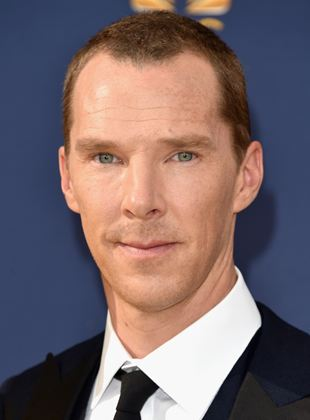
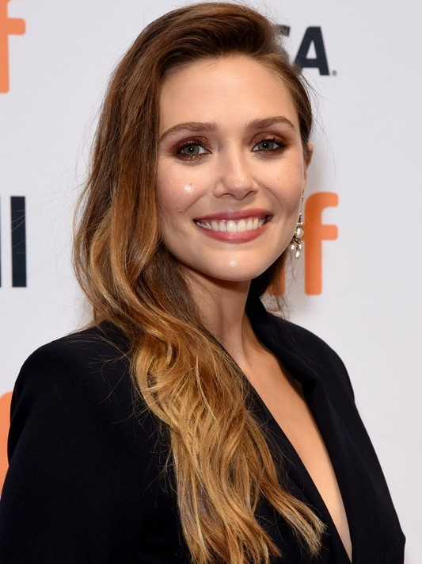
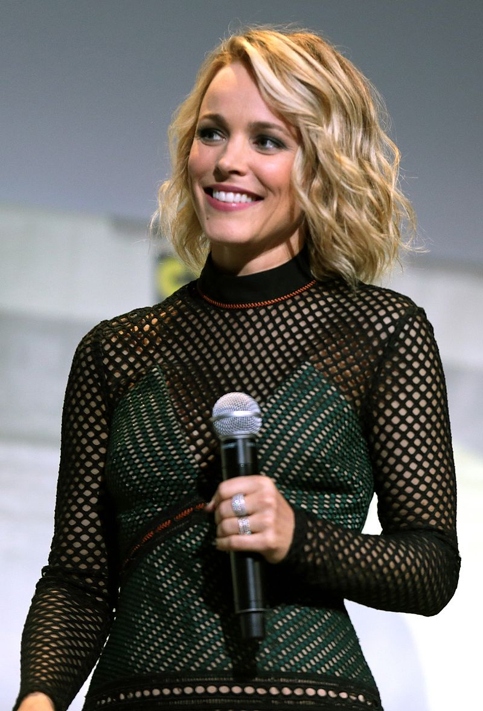

Doutor estranho: Benedict Cumberbatch

Benedict Timothy Carlton Cumberbatché um ator britânico mais conhecido pelos seus papéis como Sherlock Holmes na série de televisão Sherlock da BBC e como Stephen Strange/Doutor Estranho no Universo Cinematográfico Marvel.
Nascimento:19 de julho de 1976 (idade 45 anos)
Cônjuge:Sophie Hunter desde 2015)
Prêmios:Prêmio Emmy do Primetime: Melhor Ator em Minissérie ou Filme
Xochitl Gomez: Miss América

Xochitl Gomez-Deines é uma atriz canadense mais conhecida pelo papel de Dawn Schafer na série The Baby-Sitters Club, da Netflix e por America Chavez do filme Doctor Strange in the Multiverse of Madness, do Universo Cinematográfico Marvel.
Nascimento: 29 de abril de 2006 (idade 16 anos), Los Angeles, Califórnia, EUA
Nome completo: Xochitl Gomez-Deines
Elizabeth Olsen: Feitiçeira Escarlate

Elizabeth Chase Olsen é uma atriz norte-americana. Sua estreia como atriz ocorreu em 2011, quando ela estrelou o drama de suspense independente Martha Marcy May Marlene, pelo qual foi indicada ao Critics 'Choice Movie Award de Melhor Atriz e Independent Spirit Award de Melhor Atriz, entre outros prêmios.
Nascimento: 16 de fevereiro de 1989 (idade 33 anos), Sherman Oaks, Los Angeles, Califórnia, EUA
Cônjuge:Robbie Arnett
Nome completo: Elizabeth Chase Olsen
Rachel McAdams: Chrsitine

Rachel Anne McAdams é uma atriz canadense. Após ter concluído o curso de teatro na Universidade de Iorque, em 2001, ela trabalhou em produções de televisão e de cinema, como no filme Meninas Malvadas, em Perfect Pie, na comédia My Name is Tanino e na minissérie Slings and Arrows.
Nascimento: 17 de novembro de 1978 (idade 43 anos), London, Canadá
Parceiro: Jamie Linden (desde 2016)
Benedict Wong: Wong
Benedict Wong é um ator britânico. Ele apareceu no cinema, na televisão e também no palco. Wong é mais conhecido por retratar Pete Cheng no programa da BBC One State of Play, Kublai Khan em Marco
Nascimento: 3 de julho de 1971 (idade 50 anos),
Nome completo: Benedict Wong